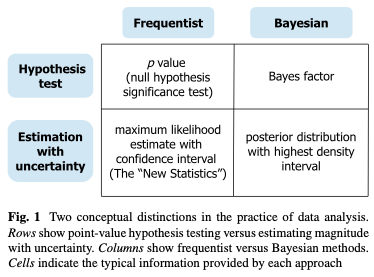

![]()

tl:dr
Pre-register predictions and specific analyses in advance
Put p values and Bayes factors in the bin
Estimate parameters within (multi-level) regression models
Describe the posterior distribution of these parameters and evaluate them in relation to your hypotheses
Disclaimer
I am not a statistician and I am not saying anything new here. I’m just summarising a bunch of other people’s suggestions.
If I have confused things, then that’s a shame. Such is life. Please send me a note with constructive feedback.
Objective
I want to outline my lab’s recent approach to data analysis because others may find it helpful. It is a relatively high-level overview, rather than a step-by-step tutorial.
Intended audience
Newbies who are looking to move towards using multi-level regression models in a Bayesian workflow.
It is not going to be newsworthy for those who already have experience with estimation approaches in multi-level regression.
My background
My background is in experimental psychology and cognitive neuroscience and my main research methods and stats training will be very familiar to those from a psychology background. Each week was a different “test”. And each week involved some data, which was suitable to a different test. Week 1 starts with a t-test and you head towards more complex ANOVAs.
All you needed to do was pick the right test for the particular dataset and pray to the datagods that p would be < 0.05. If p was > 0.05, but still close (e.g., < 0.1), then … say something vague like “trending towards significance”. If p was > 0.1 then just pretend that that means there is no real effect.
I became tired of this and I was looking for something different.
Enter Richard McElreath’s book…
Main inspiration
Richard McElreath’s textbook and Solomon Kurz’s ebook.
What comes below takes its primary inspiration from these resources. I should say here that I am only presenting a small slice of what these books have to offer. And it may not be the most clear or coherent slice. So please read these books yourself for maximal benefit.
Two other noteworthy texts are as follows:
John Krushke’s Doing Bayesian Data Analysis textbook
Bodo Winter’s Statistics for Linguists textbook
Taking an estimation approach
Krushke and Liddel (2018) draw two distinctions with the following figure:
It is the integrity and structure of the model and the assumptions that the model embodies that take centre stage, rather than the bright lights of a p-value or Bayes factor value.
Build models incrementally towards the full model
Reference Barr - keep it maximal.
Inference
Two ways to make inferences.
- Evaluate parameters of interest in the full model.
give an example of different posterior distributions and the extent to which they may or may not support your pre-registered analyses. e.g., two or three plots 1) overlapping zero, tightly and not so tightly. 2) Positive and tight and not so tight.
Then describe the proportion of values that span a particular range and what that would mean for your hypothesis. e.g., values as low as blah and as high as blah are compatible with your model estimates.
- Model comparison.
give an example. one way is to predict out-of-sample accuracy. Then compare between models. Penalty for added complexity.
In our experience in exp psych / cog neuro, model comparison has not been as helpful, but that’s just our experience. They are both valuable and serve different purposes, so they may work for other labs more than others.
Then replicate: At this point, I would then run a replication (or a replication and extension). By doing so, you avoid joining the “Cult of the Isolated Study”, which is the trap of drawing conclusions from single experiments - see here and here.
Pros and cons
Pros
- One general and yet flexible approach to data analysis
- Sophisticated and complex models via STAN
Cons
- Some models can take quite some time to build (days, weeks, months?) and need greater computer power.
And finally (but most importantly)…
One of the best things about McElreath’s book is that you get to the end of all this complex code and stats stuff, which made my brain hurt, and then he says… but statistical models are just one thing, there’s a whole lot of other stuff you need to think about too. It is a very refreshing and humbling perspective to remember how broad, deep and diverse scientific workflows should be.
In short, data analysis and modelling are just one aspect of doing science and making good inferences/judgments. There are many more that need considering. Some are as follows…
pre-registration
theory
replication
meta-analyses
Where should I start?
If you’re interested in jumping on the Bayesian estimation bandwagon, then I would do the following.
Read this book first by Bodo Winter. it provides the perfect intro to estimation approaches using R. It also uses a frequentist approach, which is valuable because folks are typically more familiar with frequentist approaches than Bayesian ones and it reinforces why there is nothing Bayesian per se about estimation approaches.
Read McElreath’s book and watch his lectures. Take one chapter at a time and complete the code exercises. If you are more of a tidyverse person (like me) and want to use the lme4 syntax that brms provides, then follow alongside McElreath’s textbook with Solomon Kurz’s ebook and associated code. That’s what I did.
Take a look at code examples online. There are a bunch. You can find some on my publications page. But better yet, find someone else who has more experience.
If you get stuck, write a reproducible example on the brms forum. Folks are really helpful on this forum and the forum seems to be fairly active.
Citation
BibTeX citation:
@online{ramsey2023,
author = {Ramsey, Richard},
title = {General Data Analysis Workflow},
date = {2023-05-10},
url = {https://rich-ramsey.com/posts/2023-05-10_data_analysis_workflow},
langid = {en}
}
For attribution, please cite this work as:
Ramsey, Richard. 2023. “General Data Analysis Workflow.”
May 10, 2023. https://rich-ramsey.com/posts/2023-05-10_data_analysis_workflow.